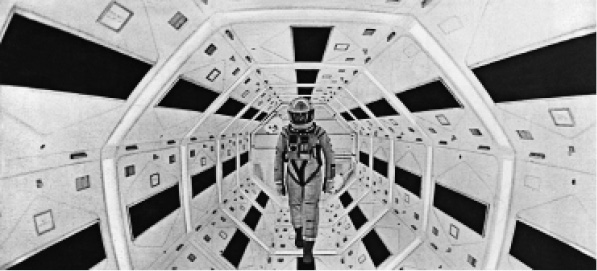

阿瑟·C.克拉克一直支持太空探索，为太空探索成为20世纪下半叶的时代强音做出了贡献。早在1946年，他就预言了探险新时代的来临，并在1962年推断可能要迎来一次探险的复兴，如果不是史诗性，也至少是接近史诗性的：“在人类奔向星空的过程中肯定会伴随着发现、冒险、胜利和不可避免的悲剧，这些终将成为新的英雄文学的源泉。”克拉克不断强调科幻文学能够以汪洋恣肆的想象力激发读者的惊奇感，给予读者灵感，这是一种独一无二的能力。在《童年的终结》（1953）中，宇宙飞船飞临世界各大城市的上空，人类同外星人的接触就此开始，这个故事听起来就好像那个时代小成本二流电影的脚本。克拉克尽量减少了对这些外星人外表的描述，只是强调他们的身形大小，而这恰恰是同他们智力的优越性相关的外在特征。这些外星霸主开始培育拥有心灵感应能力的地球儿童，在克拉克的笔下，这些儿童是帮助人类进入一个更为理性的阶段的催化剂。从这个意义上来看，这部小说为克拉克后来更为著名的太空航行叙事——《2001：太空漫游》（1968）奠定了基础。
克拉克写这部小说的时候，斯坦利·库布里克的同名电影也正在拍摄之中，这点和后来很多科幻电影的小说版是不同的。构成了小说和电影主要情节的太空航行脱胎于H.G.韦尔斯对于人类技术进步的原初叙事，把小说中的原始人主角命名为“观月者”，是为了把太空漫游设定为一种人类最古老的本能意图。故事情节从达尔文进化论（在生存斗争中为了自卫而发展出了工具和武器的观点）的概要跳到1999年，在电影中，这个转化以一根抛到空中的骨头变成空间站的意象呈现出来。到了1999年，从地球到月球的运输服务已经普及，但在月球上发掘出一块向土星传送信号的神秘黑色平板，好戏由此开场。情节又跳到了2001年，故事中的主要太空之旅以“发现1号”前往土星的任务为开端，这艘宇宙飞船上有两位宇航员，他们是鲍曼和普尔。

图3 斯坦利·库布里克《2001：太空漫游》（1968）的剧照
除了书名包含明显的典故 [1] ，克拉克在小说中还不时中断故事，提起历史上的著名旅行，就像在暗示当前的太空漫游是人类开拓精神的顶点。小说最后定下来的书名所唤起的主题比最初的“群星之上”更加宏大。不过，小说中描写的太空漫游遇到了一系列困难。飞船中的一个设备单元似乎出了故障，船上的计算机哈尔打开了气闸，造成了普尔之死。就是在这个时候，飞船的真正使命才暴露出来，也就是去探索土星的卫星土卫八；在电影中，目的地是木星。
当“发现1号”到达土卫八的时候，鲍曼进入了一块与月球上的石板一模一样的巨石，超现实氛围达到了高潮。鲍曼接近目标的时候，看到了一个停放着被废弃的宇宙飞船的地方，然后又看到了明亮的光点所构成的幻境，最后突然发现自己置身于华盛顿的一间酒店套房中。到了此时此刻，电影情节已经变得更加虚幻了，这些场景好像都只是立足于鲍曼的思维。物体不断出入于视域的焦点，鲍曼的意识通过了“星际之门”的门槛，最后叙事止于充满精神意蕴的重生意象。库布里克曾经声称“上帝的观念是《2001》的核心”，克拉克证实了这种感想。对于库布里克来说，电影的精神象征被故意模糊了，为的是让观众能够产生自己的理解，而电影的结局至少有三个层面的含义：到达目的地、回归过去和迫近新生。克拉克在《与拉玛会合》（1973）中又回到了飞船所传达的模糊精神象征。在这部小说里，一艘名为拉玛 [2] 的巨大的圆柱形宇宙飞船接近了地球，地球人派出考察队去调查这艘飞船。但是，它体积庞大，仿佛是个微型星球，需要为之绘制地图。拉玛具有明显的技术文明，在其内部也存在控制飞船的“生物机器人”，但最后拉玛离开了太阳系，并没有给地球人留下任何关于其意图的线索。克拉克在小说中把基督教、印度教、希腊神话相提并论，正是突出了拉玛象征意义的模糊性，这艘飞船可能是一次显圣，但也可能不是。